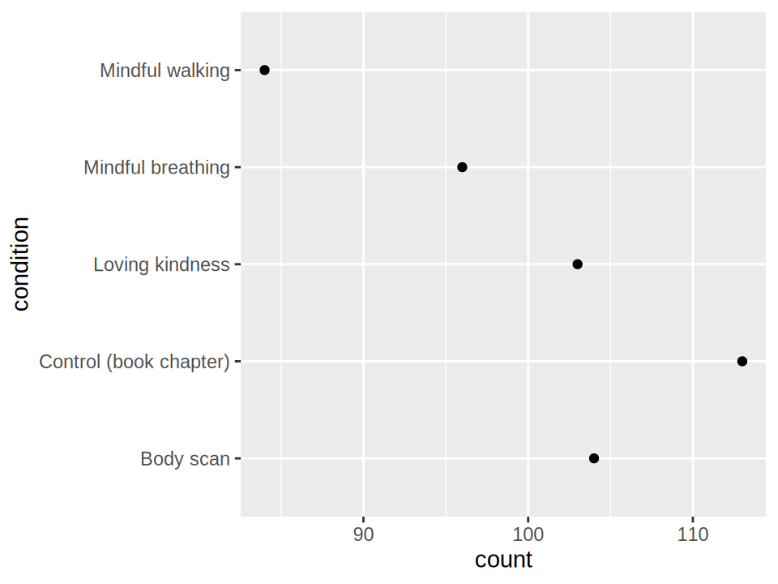
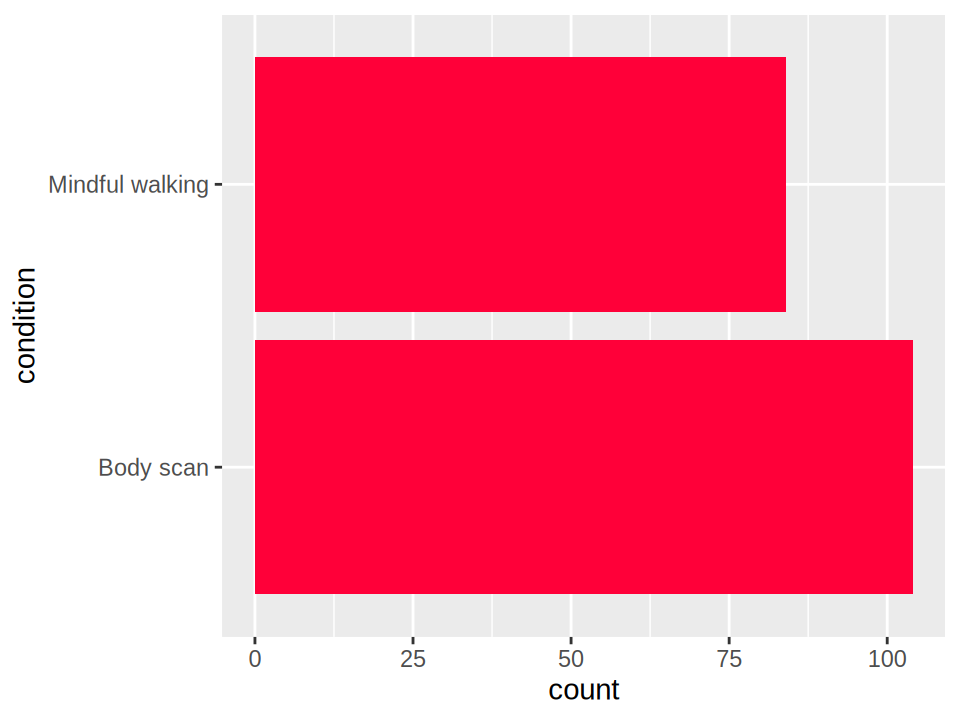
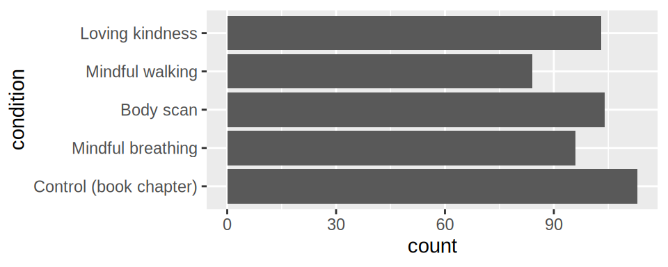
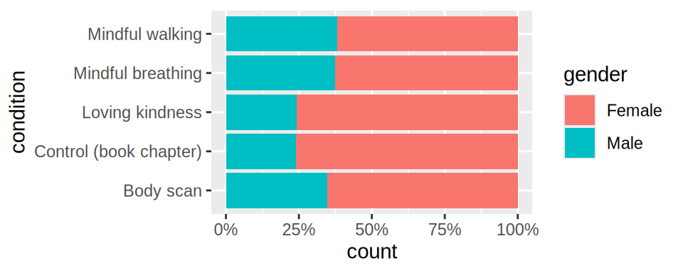

alt.Chart(meditation).mark_point().encode(
x='count()',
y='condition'
)8 Counts & proportions
In Summaries, we explored central values and variability. Another useful summary is the number of observations in a group. We will return to the meditation dataset to compare counts across conditions, then explore proportions and different ways to show parts of a whole.
8.1 Counts
.
We can use the 'count()' aggregation to count observations. By default, the categories are sorted alphabetically from top to bottom on the y-axis.
We can use stat = 'count' to count observations. This stat computes the counts itself, so we don’t need to supply a summary function such as mean or median. By default, the categories are sorted alphabetically from bottom to top on the y-axis.
ggplot(meditation, aes(y = condition)) +
geom_point(stat = 'count')
When we are showing an accumulated value like a count or sum, it can be beneficial to replace our point mark with a bar to be able to more clearly compare groups. Bar charts visualize magnitudes as position and length. Since the bar is drawn from zero, it makes the accumulated amount explicit through its length (you can think of the bar as representing all the individual observations stacked on top of each other).
alt.Chart(meditation).mark_bar().encode(
x='count()',
y='condition'
)To discourage the use of bars for summaries, the default for geom_bar is stat = 'count', which means we can write just geom_bar().
ggplot(meditation, aes(y = condition)) +
geom_bar()
Note that we have reduced the figure height so that the horizontal bars have a reasonable thickness. In this book, ggplot size adjustments are done separately from the R code (via Quarto chunk options). There are various ways to adjust the figure sizes in different environments.
WarningAvoid giant bars
Some libraries have a fixed chart size and expand the space allocated to categories to fill the entire chart instead of allocating a fixed space per category. This can lead to giant bars (and other marks), particularly when there are few categories, as in the figure below. Excessively thick bars can make a chart feel crowded. Adjusting the overall figure size can make the bars narrower.

WarningAvoid bar charts for means and medians
Remember that the length of the bar suggests that we started at zero and added something up, such as a count or sum. Using bars for means has also been observed to bias viewers toward thinking that individual observations are more likely to fall within the graphical region of the bar than beyond it, even at equal distances from the mean.1
Sorting groups
In our chart above, the groups on the y-axis are sorted in alphabetical order. .
The sort() method takes the name of another visual channel to sort by, such as 'x', 'color', etc.
alt.Chart(meditation).mark_bar().encode(
x='count()',
y=alt.Y('condition').sort('x')
)This places the largest bar at the bottom, nearest the x-axis. To place it at the top instead, pass '-x' rather than 'x'. Either direction can work, but generally it is more visually appealing to have the longest bar, the closest to the axis.
The base R function reorder() sets the order of categorical levels based on another column in the dataframe, for example, reorder(column_to_sort, column_to_use_as_sorting_order). To order the categories by their counts, we first need to calculate those counts and add them to the dataframe. Here, we use dplyr::add_count() to create a column automatically named n, then use it to order the categories on the y-axis.
meditation |>
dplyr::add_count(condition) |>
ggplot(aes(y = reorder(condition, -n))) +
geom_bar()
We used -n to put the longest bar the closest to the axis. To put the largest count at the top instead, use reorder(condition, n). Either direction can work; but generally it is more visually appealing to have the longest bar, the closest to the axis.
Ordering categories by their plotted values can also help in other charts, such as point charts of group means. However, when categories have a meaningful order, such as education levels or days of the week, preserving that order is generally more useful than sorting by value. Here, there is no such natural order, but we show an example of how we would define one.
The custom order is passed to sort, just as when ordering by another visual channel.
custom_order = ['Control (book chapter)', 'Mindful breathing', 'Body scan', 'Mindful walking', 'Loving kindness']
alt.Chart(meditation).mark_bar().encode(
x='count()',
y=alt.Y('condition').sort(custom_order)
)When ordering by another visual channel we used reorder to change the order of the dataframe column. To define a custom order, we need to directly manipulate order of the scale that the categorical variable is plotting on, in this case the y scale.
custom_order <- c('Control (book chapter)', 'Mindful breathing', 'Body scan', 'Mindful walking', 'Loving kindness')
ggplot(meditation, aes(y = condition)) +
geom_bar() +
scale_y_discrete(limits = custom_order)
Stacked bars
Like area charts, . Let’s explore this in the following exercise:
WarningAvoid stacked bar charts when exact group comparisons matter
As with stacked areas, it is difficult to compare the bar segments that do not share a baseline, since we have to rely on their length rather than aligned endpoint positions. Stacked bars work best when the total, such as the count per condition, is of primary importance and precise comparisons between segments are of secondary importance.
8.2 Proportions
. For categorical counts, we calculate it by dividing the count for a subgroup by the total count for the relevant group; multiplying by 100 gives a percentage. Here, each condition is the whole, and the gender categories are its parts. Normalizing each bar to the same length lets us compare gender proportions even though the conditions have different numbers of participants.
alt.Chart(meditation).mark_bar().encode(
y='condition',
x=alt.X('count()').stack('normalize'),
color='gender'
)We could change the displayed axis values from percentages to proportions by formatting the axis labels as decimals with one digit after the decimal point (.1f). Here, labelExpr formats each tick value directly, overriding the default percentage labels:
alt.Chart(meditation).mark_bar().encode(
y='condition',
x=alt.X('count()')
.stack('normalize')
.axis(labelExpr=alt.expr.format(alt.datum.value, '.1f')),
color='gender'
)ggplot(meditation, aes(y = condition, fill = gender)) +
geom_bar(position = 'fill')
We could change the displayed axis values from proportions to percentages by specifying that the scale labels are percentages:
ggplot(meditation, aes(y = condition, fill = gender)) +
geom_bar(position = 'fill') +
scale_x_continuous(labels = scales::label_percent())
With two segments in each normalized bar, both proportions can be compared against a shared reference: one segment starts at zero, and the other ends at one (100%). With three or more segments, those in the middle generally lack an aligned endpoint, making them harder to compare. Proportions can also be shown with side-by-side bars sharing a zero baseline.
. These bars show proportions within each condition, not proportions of the whole sample. Normalizing also hides differences in sample size: the conditions contain between 84 and 113 participants, but all five normalized bars have the same total length. Across the complete 500-observation sample, 344 participants reported female gender (68.8%).
Pie charts
. They should generally be avoided as bar charts with a shared baseline tend to communicate the same insights more effectively. A minor point in favor of pie charts is that familiar fractions, such as one-quarter and one-half, can be easy to recognize. They can therefore be useful for illustration and simple comparisons with just two or (maybe) three groups.
theta is the visual channel that controls the angle of each slice in the pie.
alt.Chart(meditation).mark_arc().encode(
theta=alt.Theta('count()').stack(True),
color='gender'
)We can also adjust the inner and outer radii. Setting an inner radius greater than zero creates a donut chart.
In ggplot, we can construct a pie chart by transforming a stacked bar into polar coordinates with coord_polar(); a very grammatically coherent way to express a pie chart!
ggplot(meditation, aes(x = factor(1), fill = gender)) +
geom_bar() +
coord_polar(theta = 'y')
WarningAvoid pie charts for precise comparisons
It is almost always better to use some form of a bar chart. When there are many groups in the data, pie charts can be disorienting. The charts below show parliamentary seats from the 2026 Swedish election.2, with parties grouped into their blocs from last election. In the bar chart to the left, it is easier to see that Bloc 1 has slightly more seats: 176 compared with 173, and we could make this even clearer by adding a line/rule at the majority cutoff or by making the figure larger. In the middle pie chart, comparing the bloc totals is much harder because each bloc is split across several party slices. Even in the simplified rightmost pie chart which shows only the seats per bloc, the small difference between the two slices is difficult to judge.
Another way of thinking of these count charts is that we are viewing distributions of categorical values. This concept can also be applied to quantitative values, as we will see in Binned distributions.